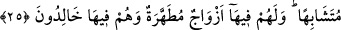

İBÂDET VE KULLUK
21. Ey insanlar! Sizi ve sizden öncekileri yaratan Rabbinize kulluk ediniz. Umulur
ki, böylece korunmuş (Allah’ın azâbından kendinizi kurtarmış) olursunuz.
22. O Rab ki, yeri sizin için bir döşek, göğü de (kubbemsi) bir tavan yaptı.
Gökten su indirerek onunla, size besin olsun diye (yerden) çeşitli ürünler çıkardı.
Artık bunu bile bile Allah’a şirk koşmayın.
23. Eğer kulumuza indirdiklerimizden herhangi bir şüpheye düşüyorsanız, haydi
onun benzeri bir sûre getirin, eğer iddiânızda doğru iseniz Allah’dan gayri
şâhidlerinizi (yardımcılarınızı) da çağırın.
24. Bunu yapamazsanız -ki elbette yapamayacaksınız- yakıtı, insan ve taş olan
cehennem ateşinden sakının. Çünkü o ateş kâfirler için hazırlanmıştır.
25. İman edip iyi davranışlarda bulunanlara, içinden ırmaklar akan cennetler
olduğunu müjdele! O cennetlerdeki bir meyveden kendilerine rızık olarak
yedirildikçe: Bundan önce dünyâda bize verilenlerdendir bu, derler. Bu rızıklar
onlara (bâzı yönlerden dünyâdakine) benzer olarak verilmiştir. Onlar için cennette
tertemiz eşler de vardır. Ve onlar orada ebedî kalıcılardır.
Bu âyet Allah’ın birliğini isbât ve Hz. Muhammed (s.a.)’in peygamberliğini tahkîk
etmek üzere indirilmiştir. Tevhîd ve risâlet, îmânın temelini teşkîl eder.
“Nâs”(İnsanlar) kelimesi; mü’min, kâfir ve münâfık herkesi içine alan genel bir
isimdir. “Ey insanlar!” şeklinde yapılan nidâ; gâfilleri uyandırmak veya gaybet